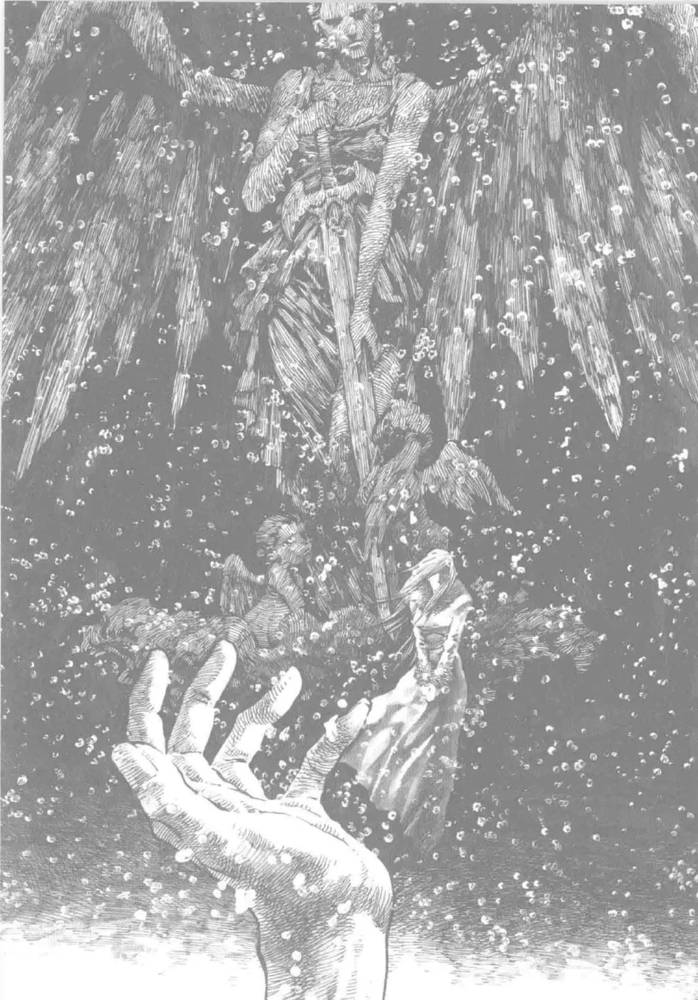

My Hobbies
My Hobbies
My Hobbies
My Hobbies
My hobby is, when I find the time for it, to "save" old mangas from being forgotten and becoming unavailable because the publisher is not printing them anymore nor offering an online solution. This requires an entire process of unbinding the book, scanning the pages with a black background while being careful to not get any dust on the scanner. The next step is to crop, level the blacks and whites as well as denoise each image. Finally, I finish by optimising them so they can be stored without requiring an entire hard drive. Here is an example of one I've made recently :
Here is what the original language scan looks like :
The people who scanned it lowered the resolution too much, rendering it unusable. Trying to level the blacks and whites made it lose even more details.
Here is the scan I made from the french translated version, which is no longer available to purchase either :
As you can see, the image needs to be cropped. I guess you also noticed this image isn't displayed with the others on the website. In fact, scanned documents of high resolution aren't usable without any optimised colors or compression. Thankfully that can be done with a software like OxiPNG.
And finally here is the result after using the following softwares: Illiteracy’s Tankroller v0.0.0.5, Topaz Denoise 5 Photoshop filters and adjustments as well as Waifu2X AI.

Going from a 140MB file to a 6MB one while conserving details as well as getting rid of paper grain.